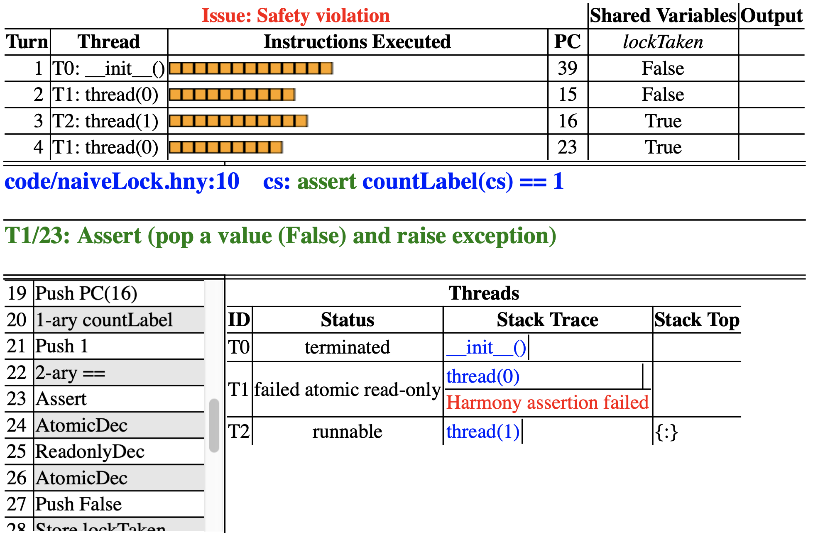
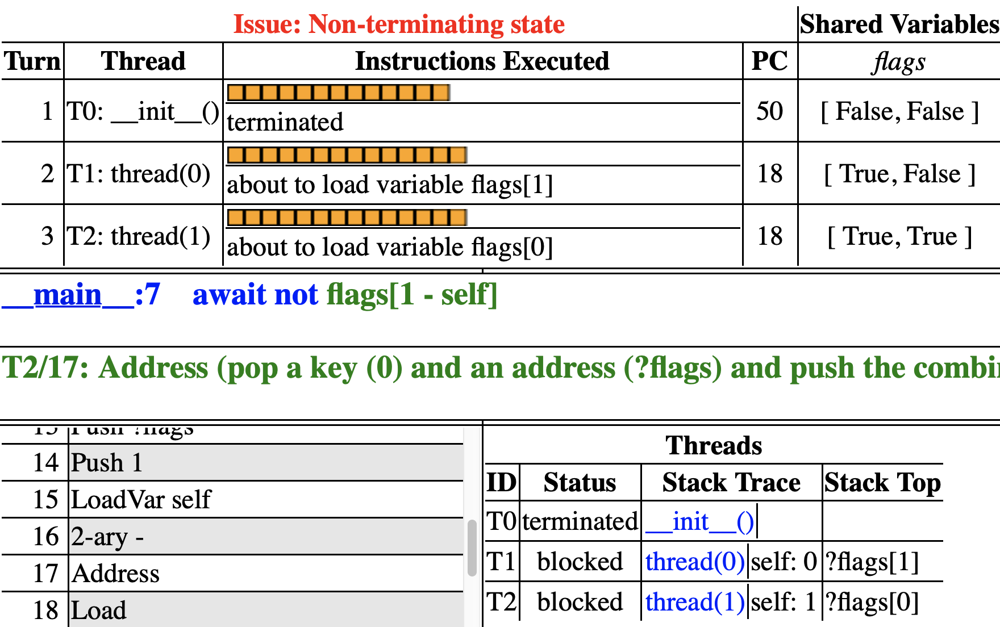

Critical Sections
Hopefully you have started thinking of how to solve the concurrency problem and you may already have prototyped some solutions. In this chapter, we will go through a few reasonable but broken attempts. At the heart of the problem is that we would like make sure that, when the count variable is being updated, no other thread is trying to do the same thing. This is called a critical section (aka critical region): a set of instructions where only one thread is allowed to execute at a time.
Critical sections are useful when accessing a shared data structure, particularly when that access requires multiple underlying machine instructions. A counter is a very simple example of a data structure (it is an array of bits), but---as we have seen---incrementing it requires multiple instructions. A more involved one would be accessing a binary tree. Adding a node to a binary tree, or re-balancing a tree, often requires multiple operations. Maintaining "consistency" is certainly much easier if during this time no other thread also tries to access the binary tree. Typically, you want some invariant property of the data structure to hold at the beginning and at the end of the critical section, but in the middle the invariant may be temporarily broken---this is not a problem as critical sections guarantee that no other thread will be able to see it. An implementation of a data structure that can be safely accessed by multiple threads and is free of race conditions is called thread-safe.
def thread():
while True:
# Enter critical section
# Critical section is here
cs: assert countLabel(cs) == 1
# Exit critical section
spawn thread()
spawn thread()
def thread():
while choose({ False, True }):
# Enter critical section
# Critical section is here
cs: assert countLabel(cs) == 1
# Exit critical section
spawn thread()
spawn thread()
A critical section is often modeled as threads in an infinite loop
entering and exiting the critical section. Figure 5.1 shows the
Harmony code. Here cs is a label, identifying a location in the HVM
bytecode. The first thing we need to ensure is that there can never be
two threads in the critical section. This property is called mutual
exclusion. We would like to place an assertion at the cs label that
specifies that only one (the current) thread can be there.
Harmony in fact supports this. It has an operator countLabel l,
where l is the name of the label (in this case, cs). The operator
returns the number of threads executing at that label. Method
countLabel only exists for specification purposes---do not use it in
normal code. If you run the code through Harmony, the assertion should
fail because there is no code yet for safely entering and exiting the
critical section.
However, mutual exclusion by itself is easy to ensure. For example, we could insert the following code to enter the critical section:
await False
cs at the same time. But it does so by preventing any thread from
reaching the critical section. We clearly need another property besides
mutual exclusion.
Mutual exclusion is an example of a safety property, a property that ensures that nothing bad will happen, in this case two threads being in the critical section. What we need now is a liveness property: we want to ensure that eventually something good will happen. There are various possible liveness properties we could use, but here we will propose the following informally: if (1) there exists a non-empty set \(S\) of threads that are trying to enter the critical section and (2) threads in the critical section always leave eventually, then eventually one thread in \(S\) will enter the critical section. We call this progress.
In order to detect violations of progress, and other liveness problems in algorithms in general, Harmony requires that every execution must be able to reach a state in which all threads have terminated. Clearly, even if mutual exclusion holds in Figure 5.1, the spawned threads never terminate. We will instead model threads in critical sections using the framework in Figure 5.2: a thread can choose to enter a critical section more than once, but it can also choose to terminate, even without entering the critical section ever. (Recall that Harmony will try every possible execution, and so it will evaluate both choices.) As it turns out, there is an advantage to doing it this way: we can also test if a thread can enter when there is no other thread trying to enter the critical section. As we will see below, this is not always obvious.
We will now consider various approaches toward implementing this specification.
lockTaken = False
def thread(self):
while choose({ False, True }):
# Enter critical section
await not lockTaken
lockTaken = True
# Critical section
cs: assert countLabel(cs) == 1
# Leave critical section
lockTaken = False
spawn thread(0)
spawn thread(1)

flags = [ False, False ]
def thread(self):
while choose({ False, True }):
# Enter critical section
flags[self] = True
await not flags[1 - self]
# Critical section
cs: assert countLabel(cs) == 1
# Leave critical section
flags[self] = False
spawn thread(0)
spawn thread(1)

turn = 0
def thread(self):
while choose({ False, True }):
# Enter critical section
turn = 1 - self
await turn == self
# Critical section
cs: assert countLabel(cs) == 1
# Leave critical section
spawn thread(0)
spawn thread(1)
You may already have heard of the concept of a lock and have realized that it could be used to implement a critical section. The idea is that the lock is like a baton that at most one thread can own (or hold) at a time. A thread that wants to enter the critical section at a time must obtain the lock first and release it upon exiting the critical section.
Using a lock is a good thought, but how does one implement one?
Figure 5.3 presents an attempt at mutual exclusion based on a
naı̈ve (and, as it turns out, incorrect) implementation of a lock.
Initially the lock is not owned, indicated by lockTaken being False.
To enter the critical section, a thread waits until lockTaken is
False and then sets it to True to indicate that the lock has been
taken. The thread then executes the critical section. Finally, the
thread releases the lock by setting lockTaken back to False.
Unfortunately, if we run the program through Harmony, we find that the
assertion fails. Figure 5.3 also shows the Harmony output.
thread(1) finds that the lock is available, but just before it stores
True in lockTaken, thread(0) gets to run. (Recall that you can
hover your mouse over a machine instruction in order to see what it
does.) Because lockTaken is still False, it too believes it can
acquire the lock, and stores True in lockTaken and moves on to the
critical section. Finally, thread(1) moves on, also stores True into
lockTaken and also moves into the critical section. thread(1) is the
one that detects the problem. The lockTaken variable suffers from the
same sort of race condition as the count variable in Figure 3.2:
testing and setting the lock consists of several instructions. It is
thus possible for both threads to believe the lock is available and to
obtain the lock at the same time.
Preventing multiple threads from updating the same variable, Figure 5.4 presents a solution based on each thread having a flag indicating that it is trying to enter the critical section. A thread can write its own flag and read the flag of its peer. After setting its flag, the thread waits until the other thread (\(1 - \mathit{self}\)) is not trying to enter the critical section. If we run this program, the assertion does not fail. In fact, this solution does prevent both threads being in the critical section at the same time.
To see why, first note the following invariant: if thread i is in the
critical section, then flags[i] = True. Without loss of
generality, suppose that thread 0 sets flags[0] at time \(t_0\).
Thread 0 can only reach the critical section if at some time \(t_1\),
\(t_1 > t_0\), it finds that flags[1] = False. Because of the
invariant, flags[1] = False implies that thread 1 is not in the
critical section at time \(t_1\). Let \(t_2\) be the time at which thread 0
sets flags[0] to False. Thread 0 is in the critical section
sometime between \(t_1\) and \(t_2\). It is easy to see that thread 1 cannot
enter the critical section between \(t_1\) and \(t_2\), because flags[1]
= False at time \(t_1\). To reach the critical section between \(t_1\) and
\(t_2\), it would first have to set flags[1] to True and then wait
until flags[0] = False. But that does not happen until time \(t_2\).
However, if you run the program through Harmony, it turns out the solution does have a problem: if both try to enter the critical section at the same time, they may end up waiting for one another indefinitely. (This is a form of deadlock, which will be discussed in Chapter 19.) Thus the solution violates progress.
The final naı̈ve solution that we propose is based on a variable called turn. Each thread politely lets the other thread have a turn first. When turn = i, thread i can enter the critical section, while thread \(1-i\) has to wait. An invariant of this solution is that while thread i is in the critical section, turn = i. Since turn cannot be 0 and 1 at the same time, mutual exclusion is satisfied. The solution also has the nice property that the thread that has been waiting the longest to enter the critical section can go next.
Run the program through Harmony. It turns out that this solution also violates progress, albeit for a different reason: if thread i terminates instead of entering the critical section, thread \(1-i\), politely, ends up waiting indefinitely for its turn. Too bad, because it would have been a great solution if both threads try to enter the critical section ad infinitum.
Exercises
5.1 Run Figure 5.2 using Harmony. As there is no protection of the critical section, mutual exclusion is violated, the assertion should fail, and a trace should be reported. Now insert
await False
5.2 See if you can come up with some different approaches that satisfy both mutual exclusion and progress. Try them with Harmony and see if they work or not. If they don't, try to understand why. If you get active busy waiting or data race reports, you probably found a correct solution; you'll learn later how to suppress those. Do not despair if you can't figure out how to develop a solution that satisfies both mutual exclusion and progress---as we will find out, it is possible but not obvious.